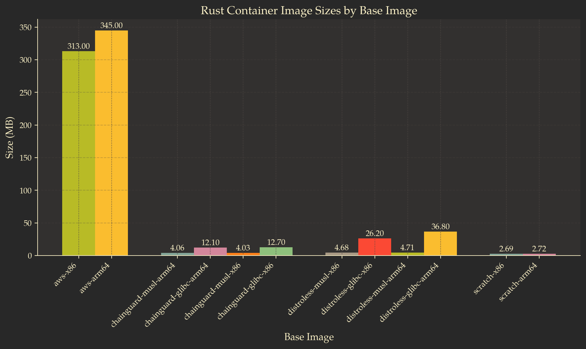
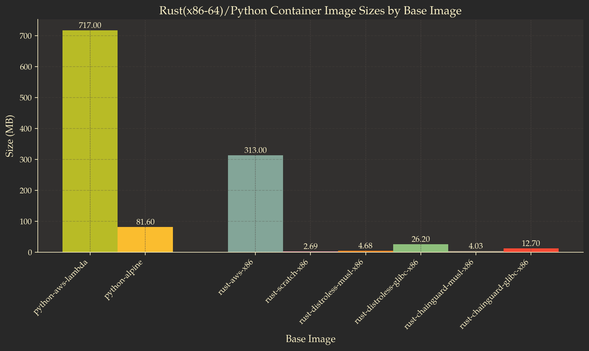

Building Super Slim Containerized Lambdas on AWS - Revisited
Introduction<<
Recently, I was reading through some AWS blogs when I stumbled upon this article, Optimize your container workloads for sustainability by Karthik Rajendran and Isha Dua. Among other topics, the article discusses reducing the size of your Lambda container images to achieve better sustainability. Some of the main points discussed are how and why to reduce the size of Lambda containers - the idea being that smaller containers require less bandwidth to transfer over the internet, take up less storage on disk, and are usually faster to build, thereby consuming less energy.
At first glance, this might seem like a minor optimization, but when you consider that AWS has millions of customers building Docker images, it suddenly makes sense to recommend working with slimmer images. Furthermore, having smaller images is considered a best practice overall.
Around three years ago, I wrote an article about “how”, I was discussing ways to reduce the size of Lambda containers. My article was titled (Building Super Slim Containerized Lambdas on AWS)[/articles/building-super-slim-containerized-lambdas.html] and it primarily focused on Lambda functions written in Rust. Reading the AWS blog article reminded me that I should probably revisit the topic of creating slim Lambda images and provide a more informed perspective.
Short Recap<<
As I mentioned, in my old article, I used Rust to build a Lambda function. Code written in Rust is compiled into a binary. To execute this binary as a Lambda function, you can either upload the binary directly to AWS Lambda or package it in a Docker image, push the image to Amazon ECR, and configure a Lambda function to use that image.
The size of this Docker image can vary significantly. If you use the default image recommended by AWS (public.ecr.aws/lambda/provided), the container size can be a few hundred megabytes. However, if you go with a minimal approach, such as a Distroless image, you can get containers down to just a few dozen megabytes, depending mostly on the size of the compiled binary.
When it comes to Lambda execution time, image size has little impact. Whether the image is large or small, the function’s execution time remains roughly the same - though I haven’t tested exceptionally large images that might push Lambda’s limits.
Ultimately, the takeaway from the article was that while Distroless allows you to build smaller images, it might not be all that beneficial since it doesn’t improve performance. I also pointed out that a smaller image can speed up the build pipeline. Admittedly, at that time, I didn’t even consider the sustainability angle. Even after all these years, I can only speculate about its impact. As a solo AWS user, it’s difficult to quantify how much of a difference using smaller images would actually make.
On the other hand, I’m really excited to dive into the nifty details of building tiny images.
Steps to Build a Slim Container<<
In order to build slim containers, you would want to leverage the following steps:
1. Use tiny base images
This is probably the most important step in reducing the image size. In most cases, this step allows us to achieve the greatest size reduction without modifying our application’s source code.
The general idea is that instead of base images such as public.ecr.aws/lambda/provided:al2 (the AWS-recommended image for compiled executables like Rust applications) or images based on Ubuntu you can use images such as Alpine, Distroless or Chainguard. These alternatives have a significantly smaller footprint.
Distroless and Chainguard images are optimized to include only the essentials needed for execution. They lack a shell, package manager, and most standard Linux binaries, making them extremely small. Alpine-based images include more utilities, such as a shell and basic Linux binaries, yet they are still designed to occupy only a few megabytes on disk.
The downside of using these small images is that they can be challenging to work with during development or debugging. For example, you cannot directly open a shell in a Distroless image since it does not include one.
ℹ️ Note: To start a shell inside a Distroless image, you can rebuild your image using the
:debugtag. For example, instead ofFROM gcr.io/distroless/cc:latest-amd64you can haveFROM gcr.io/distroless/cc:debug. “Debug” images include busybox, which provides a minimal set of common Linux binaries..
ℹ️ Note: Similarly, with Chainguard images, you can append the
-devkeyword to the tag of the image. For example, if you have an image built onFROM cgr.dev/chainguard/static:latest, you can rebuild it withFROM cgr.dev/chainguard/static:latest-devto have access to a shell and other debug tools.
2. Add strictly what you need to the image
This point is similar to the previous one, the difference being that even if you choose the smallest base image possible, you might found yourself having a bunch of unnecessary stuff added back to your image at build time. To avoid this, you can do the following:
-
Use multistage builds1: Most likely, your application is built alongside the Docker image you publish. In many cases, developers copy the source code into the image and then run commands to create the application package. As a result, the final image may contain unnecessary development dependencies that are not required for execution. You can either remove these manually, or just simply use multistage builds. In case of multistage builds, you can use different images for build and execution. In fact, you can use a fully fledged, “large” development image for the build step, after which you copy the artifacts to a stripped down image used for execution.
-
Use
.dockerignoreto copy only what you need to your image: similarly to.gitignore, .dockerignorelet’s you specifies files and folders which you should not copy over to your images at build time.
3. Use a compiled language to build a small executable
Nowadays, it is becoming increasingly challenging to distinguish between interpreted and compiled languages. Many interpreted (or so-called “scripting”) languages use just-in-time (JIT) compilers, meaning the code is compiled to machine code at execution time.
The key takeaway here is that, to optimize the size of your container, you may want to avoid writing your Lambda functions in languages that require an interpreter or JIT compiler. Instead, you should choose something that compiles to machine code and is compressed into an executable.
To be more specific, rather than using Python or JavaScript, you might consider Rust, Go, or C++. Of course, I fully understand that this may not always be feasible, and my intention is not to discredit Python, JavaScript, or any other language. However, it is important to recognize that if we prioritize minimizing container size, eliminating the interpreter can free up tens-if not hundreds—of megabytes.
4. Static vs dynamic linking
In case you followed previous points, your image should be really small right now. At this point, probably your main goal is to reduce the size of the executable. One thing you may encounter at this point is the presence of libc (usually glibc) in your Docker image. Both Distroless and Chainguard present the option to chose a base image the has glibc and an equivalent image that does not have it. Obviously, the image that has glibc is larger in size.
glibc, or the GNU C Library, is the standard C library (libc) implementation used on Linux systems. It offers a wide range of functions that allow programs to interact with the operating system, such as handling input/output, managing memory, and manipulating strings. Rust, relies on glibc for interacting with the operating system. On Linux, this typically means linking against glibc, as Rust’s standard library, libstd, uses it for system calls and other operations. On the other hand, Go offers more flexibility by allowing compilation without relying on the system’s C standard library. By setting CGO_ENABLED=0, Go programs use their own implementations for system interactions, avoiding glibc dependency. This means that if you build a Lambda function with Go, you can just disable linking against glibc and you can put our executable in an image that does not have the library. In case of Rust, you can build an executable that statically links libc by using musl23.
5. Building an image from Scratch
The most minimal base image you can use is scratch4. You can simply copy your binary executable to it the image and it will be executed as PID 1. This can work for AWS Lambda functions as well, but you may encounter issues depending on what your Lambda function attempts to accomplish. For example:
- CA (Certificate Authority) certificates will be missing, you wont even have a
/etc/ssl/certs/folder. This will cause HTTPS connections to fail. To use any AWS service such as DynamoDB or S3, HTTPS must work. - Standard directories such as
/var,/home, and/rootwill be missing. The exception is the/tmpdirectory, which will be mounted by AWS, allowing us to write to a temporary folder if needed. - Time zone data may cause issues, as the
/usr/share/zoneinfodirectory will be missing.
Of course, you can overcome these issues by adding the necessary files and folders at build time, but that defeats the purpose of using the scratch base image. Instead, you would rather choose Distroless or Chainguard.
Build the Slimmest Image Possible for a Rust Lambda<<
Following these steps let’s try to build a slim but usable containerized image for a Lambda function developed in Rust.
ARG FUNCTION_DIR="/function"
FROM rust:1.84-bullseye AS builder
WORKDIR /build
ADD Cargo.toml Cargo.toml
ADD Cargo.lock Cargo.lock
ADD src src
# Cache build folders, see: https://stackoverflow.com/a/60590697/7661119
# Docker Buildkit required
RUN --mount=type=cache,target=/usr/local/cargo/registry \
--mount=type=cache,target=/home/root/app/target \
rustup target add x86_64-unknown-linux-musl && \
cargo build --release --target x86_64-unknown-linux-musl
# copy artifacts to a clean image
FROM cgr.dev/chainguard/static:latest
COPY --from=builder /build/target/x86_64-unknown-linux-musl/release/bootstrap bootstrap
ENTRYPOINT [ "./bootstrap" ]
The size of this image is 4.03 MB, of which the final base image itself (chainguard/static) accounts for approximately 1.33 MB, while the remaining 2.7 MB is the executable. Admittedly, my Lambda function does not do a lot and has only a few dependencies (the code for the function can be found here: GitHub). What I would want to point out is that this Docker image follows the steps outlined above to achieve the reduced size:
- It is using a builder image to compile the executable.
- Only the necessary files a copied to the final image - specifically, the executable named
bootstrap - It is using
chainguard/staticto run the Lambda function. Distroless could have been an option as well, but that would result in a slightly larger image size (4.68 MB). - It is using
x86_64-unknown-linux-musltoolchain to build the executable, ensuring that libc is statically linked.
Additionally, the target architecture is x86_64. However, with a few modifications, you could build the same image for arm64:
ARG FUNCTION_DIR="/function"
FROM rust:1.84-bullseye AS builder
WORKDIR /build
ADD Cargo.toml Cargo.toml
ADD Cargo.lock Cargo.lock
ADD src src
# Cache build folders, see: https://stackoverflow.com/a/60590697/7661119
# Docker Buildkit required
RUN --mount=type=cache,target=/usr/local/cargo/registry \
--mount=type=cache,target=/home/root/app/target \
rustup target add aarch64-unknown-linux-musl && \
cargo build --release --target aarch64-unknown-linux-musl
# copy artifacts to a clean image
FROM gcr.io/distroless/static:latest-arm64
COPY --from=builder /build/target/aarch64-unknown-linux-musl/release/bootstrap bootstrap
ENTRYPOINT [ "./bootstrap" ]
The size of this image will be roughly the same - I measured 4.06 MB on my computer. There are minor variations in size depending on the target architecture, with x86_64 typically being a few KB smaller. However, this difference is negligible.
You can still get the image slimmer by using scratch:
ARG FUNCTION_DIR="/function"
FROM rust:1.84-bullseye AS builder
WORKDIR /build
ADD Cargo.toml Cargo.toml
ADD Cargo.lock Cargo.lock
ADD src src
# Cache build folders, see: https://stackoverflow.com/a/60590697/7661119
# Docker Buildkit required
RUN --mount=type=cache,target=/usr/local/cargo/registry \
--mount=type=cache,target=/home/root/app/target \
rustup target add x86_64-unknown-linux-musl && \
cargo build --release --target x86_64-unknown-linux-musl
# copy artifacts to a clean image
FROM scratch
COPY --from=builder /build/target/x86_64-unknown-linux-musl/release/bootstrap bootstrap
ENTRYPOINT [ "./bootstrap" ]
In my case, this Lambda function works - it executes successfully and produces the expected output. However, all it does is calculate the value of PI using the Unbounded Spigot Algorithm for the Digits of PI5. It is a “toy” function, serving as proof that scratch can work for Lambda functions. Nevertheless, I do not recommend using this base image. The size of this image is 2.69 MB.
Before closing this section, here is a comparison between base images with Rust executables:

Build the Slimmest Image Possible for a Python Lambda<<
Understandably, there can be several reasons not to use a compiled language for your Lambda function. In this section of the article, we will try to build a slim image for a Lambda function written in Python.
For this example, I will use a Python image based on Alpine Linux. Alpine-based images are widely known as slim images, but they are not the slimmest possible options. They come with a package manager (apk), a shell, and all the well-known Linux utilities, so they are not as “clean” as Distroless or Chainguard-based images.
I tried to build an image for a Python Lambda using a Distroless base, but I failed miserably. The AWS Lambda Python Runtime Interface Client relies on C++ modules using CPython6. These C++ modules have to be built at installation time and require a bunch of dependencies. Besides, they rely on dynamically linking several dependencies (musl vs. glibc, remember?). I tried to add all the necessary dependencies to the final runtime image, but in the end, whatever I did, it didn’t work out. So I gave up. This might be another project of mine for a later time—to try to make it work.
Nevertheless, here is how a containerized Lambda function for Python would look:
ARG FUNCTION_DIR="/home/app/"
ARG RUNTIME_VERSION="3.11"
ARG DISTRO_VERSION="3.21"
# Stage 1 - bundle base image + runtime
# Grab a fresh copy of the image and install GCC
FROM python:${RUNTIME_VERSION}-alpine${DISTRO_VERSION} AS python-alpine
# Install GCC (Alpine uses musl but we compile and link dependencies with GCC)
RUN apk add --no-cache libstdc++
# Stage 2 - build function and dependencies
FROM python-alpine AS build-image
# Needed for libexecinfo-dev. Alternatives such as libunwind may build awslambdaric, but the function wont execute in the final runtime image.
# Tanks https://stackoverflow.com/questions/77518311/dockerfile-for-node16-alpine-in-aws-lambda
RUN apk add --no-cache --update --repository=https://dl-cdn.alpinelinux.org/alpine/v3.16/main/ libexecinfo-dev
# Install aws-lambda-cpp build dependencies
RUN apk add --no-cache \
build-base \
libtool \
autoconf \
automake \
libexecinfo-dev \
make \
cmake \
libcurl
ARG FUNCTION_DIR
ARG RUNTIME_VERSION
RUN mkdir -p ${FUNCTION_DIR}
COPY . ${FUNCTION_DIR}
RUN python${RUNTIME_VERSION} -m pip install awslambdaric --target ${FUNCTION_DIR}
RUN python${RUNTIME_VERSION} -m pip install -r ${FUNCTION_DIR}requirements.txt --target ${FUNCTION_DIR}
# Stage 3 - final runtime image
# Grab a fresh copy of the Python image
FROM python-alpine
ARG FUNCTION_DIR
WORKDIR ${FUNCTION_DIR}
COPY --from=build-image ${FUNCTION_DIR} ${FUNCTION_DIR}
ENTRYPOINT [ "python", "-m", "awslambdaric"]
CMD [ "main.handler" ]
Admittedly, I didn’t come up with all of this by myself. The image is based on this blogpost7 from Danilo Poccia.
The final image size is 81.6 MB, which is significantly smaller than the 717 MB base image (public.ecr.aws/lambda/python) recommended in the AWS documentation8.
To put into perspective what we built, here is a comparison of the Rust x86-64 images and the Python images. The size of the Alpine image is more than three times larger than the largest Distroless image. But all in all, it is still relatively small compared to the base images provided by AWS.

Conclusions<<
Revisiting this topic made me realize that building smaller Docker images can be a lot of fun, but it can also be quite challenging. Returning to the original point of this article, it is true that smaller containers can contribute to sustainability. However, in order to build and work with them as developers, we must invest a significant amount of time and effort.
Should you go in tomorrow and try to reduce the size of all your Lambda images running in production? Probably not. There is no such thing as a free lunch. You trade ease of use for bandwidth and storage savings. It is up to you to decide if it’s worth it.
As always, the code referenced in this article can be found on Github: https://github.com/Ernyoke/aws-lambda-benchmarks
References:<<
-
Unbounded Spigot Algorithms for the Digits of Pi - Jeremy Gibbons ↩
-
GitHub Repository for AWS Lambda Python Runtime Interface Client ↩
-
New for AWS Lambda – Container Image Support - in the blogpost Danilo gives an example for Python 3.9. Based on his Dockerfile, I updated mine to use Python 3.11. At first glance, this should have been pretty easy to do, but I still had to track down dependencies (
libexecinfo-dev) that got removed from newer version of Alpine images. ↩